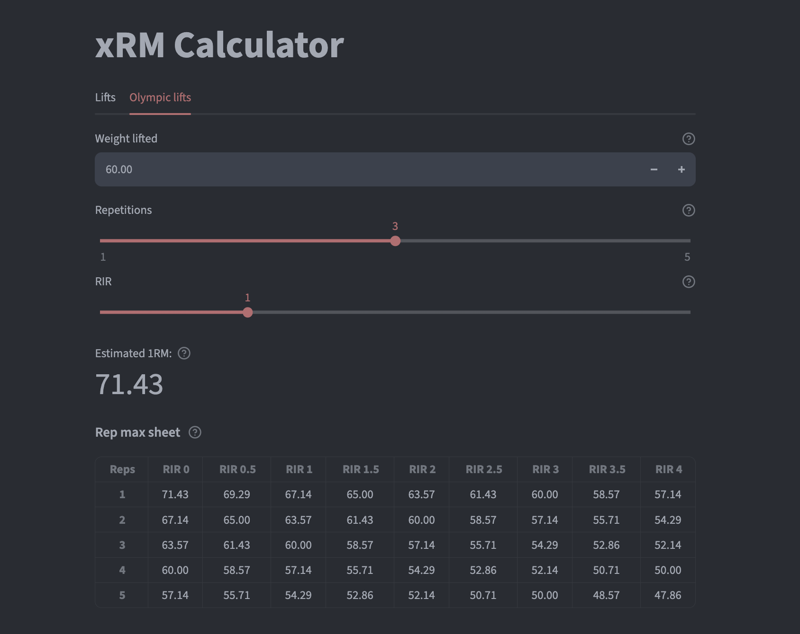
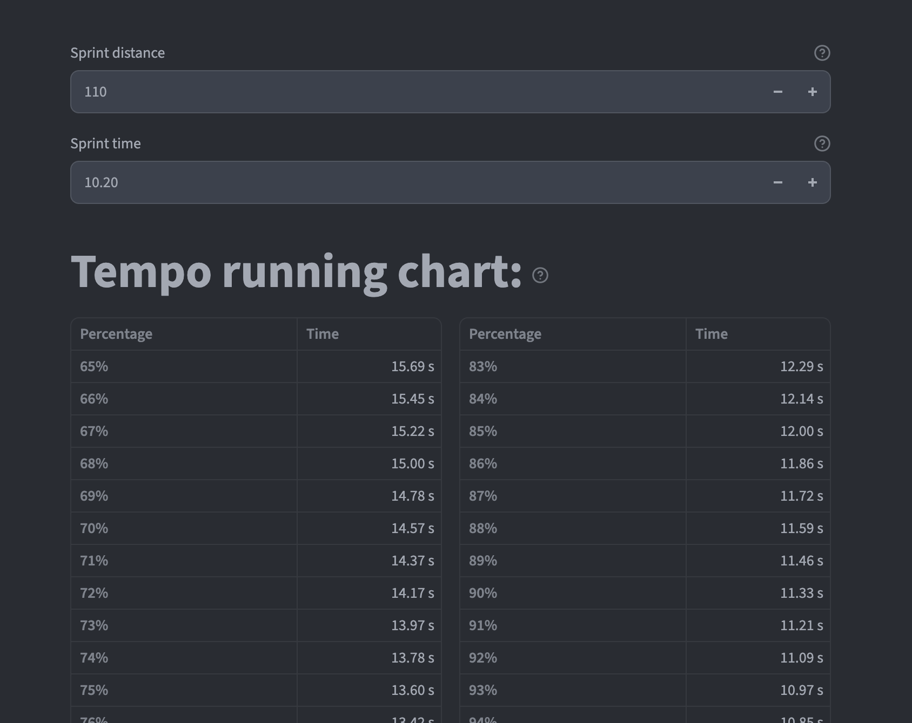
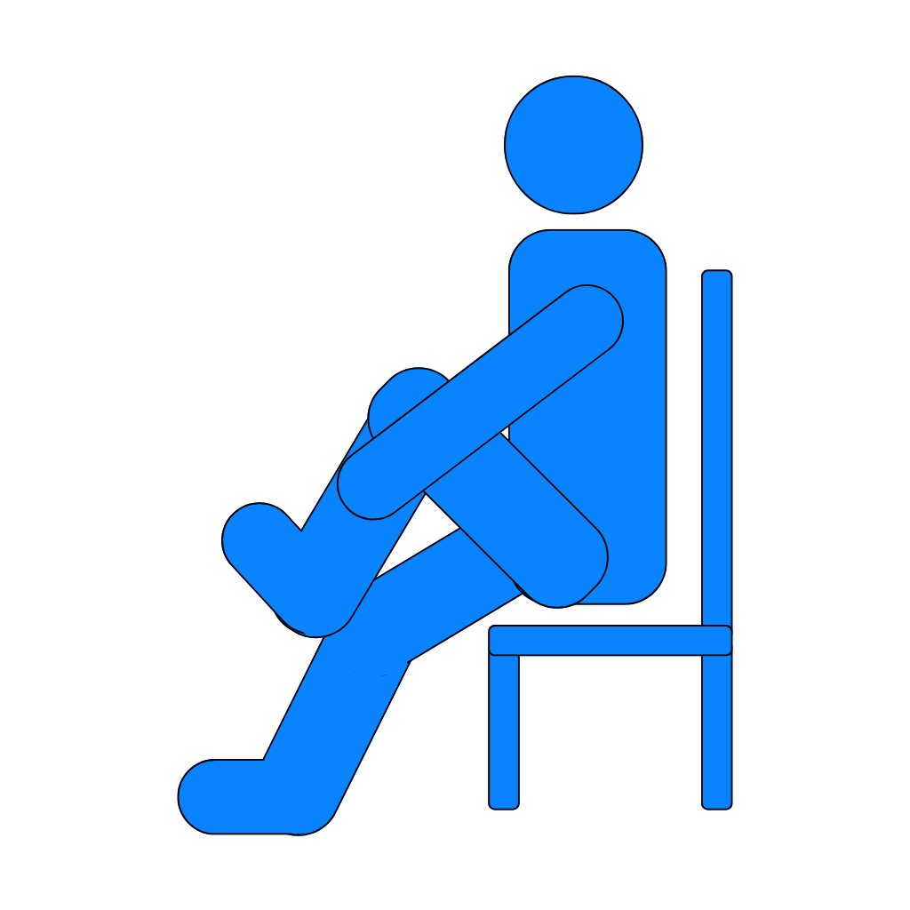
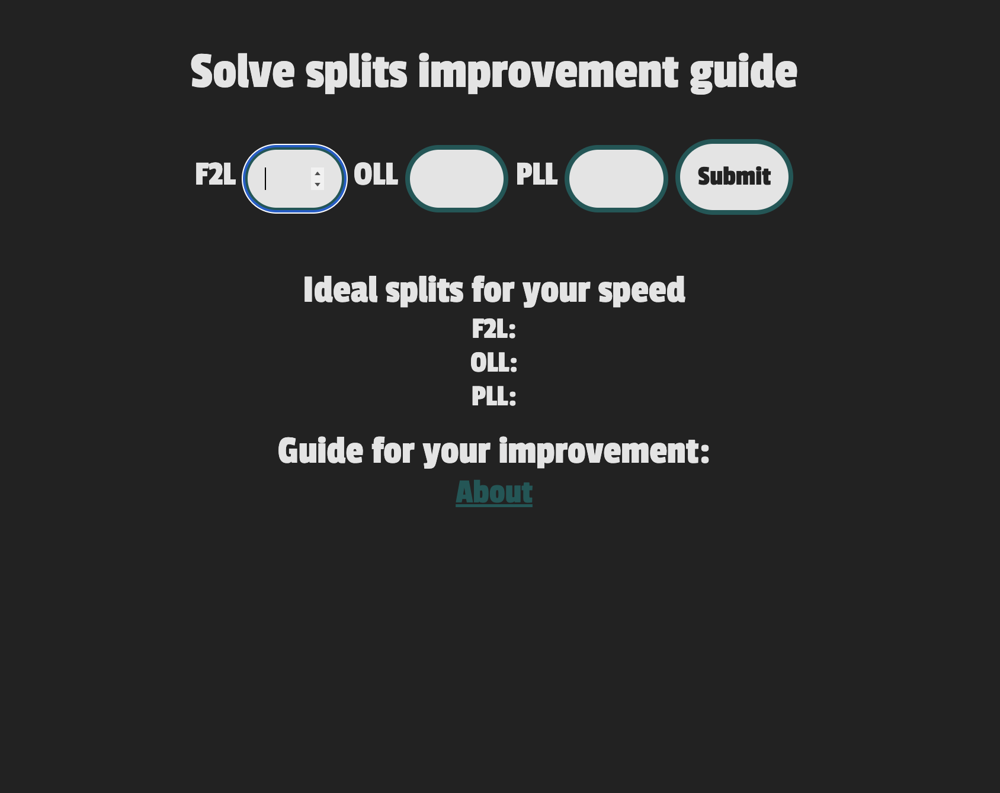
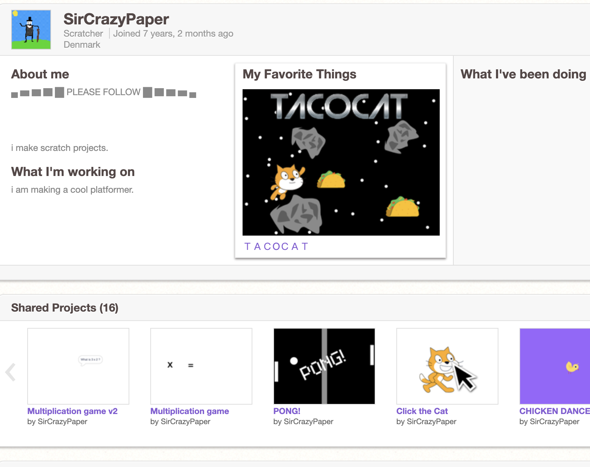
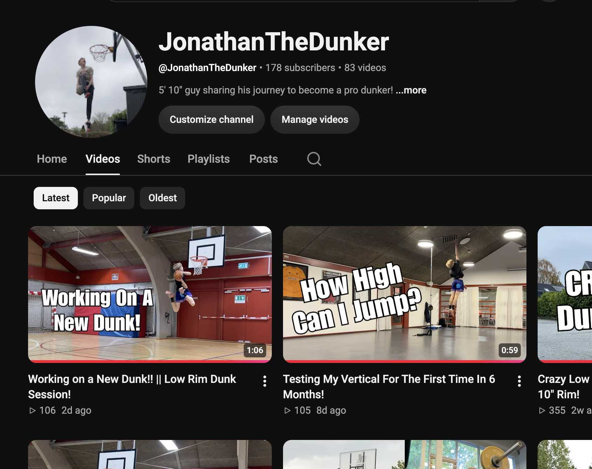
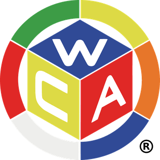
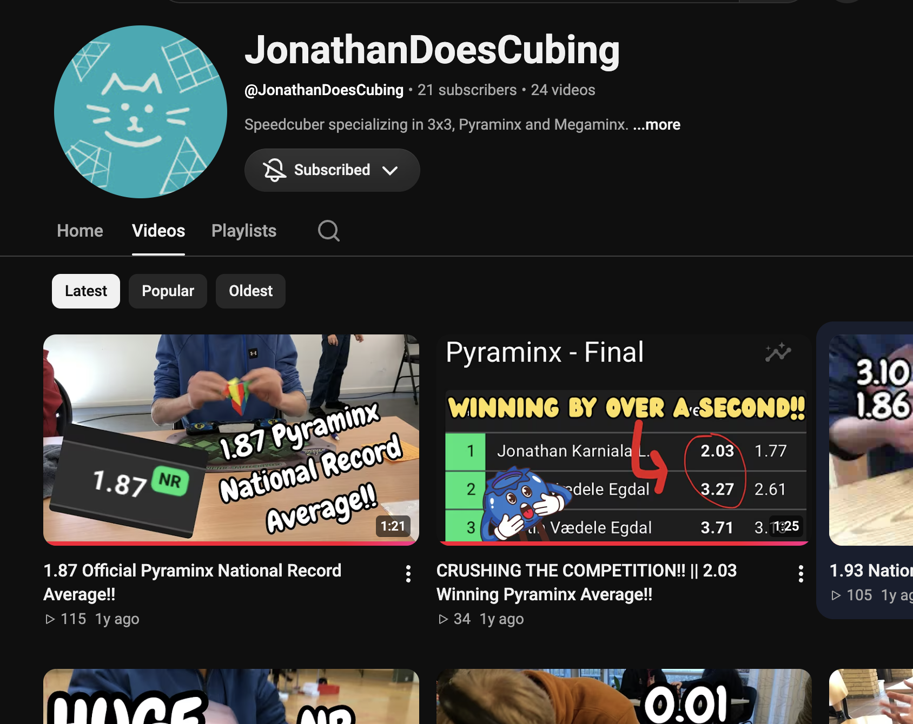

Hi, I am Jonathan, and this website is dedicated my portfolio. I have made multiple programming projects, which you can see below. I also used to be a national class speedcuber, and have spent many hours solving cubes. I am currently working on becoming a pro dunker, and documenting that journey on YouTube, my PR vertical jump is 31.5", and I am constantly working on improving it, as well as my dunk bag, by practicing on low rims.

A python based web app built in October 2026, that calculates your estimated rep maxes for lifts. It uses the Epley's formula, and has functionalities for both olympic lifts, as well as normal lifts. It also has RIR in the calculations, so you can get more accurate numbers for rep maxes at different effort levels.
App link GitHub link
A python based web app built in November 2026, that calculates how fast you need to run on your tempo running reps. You input your sprint time for a given distance, and the app calculates speed percentages of that.
App link GitHub link
An IOS app built with Swift in March 2025 that helps you with tendon health. It times your isometrics, has a daily pain tracker, and sends you reminders to track your pain, and do your isos throughout the day.
GitHub link
A web app built with HTML, JS, and CSS in May 2024 that, with help from your CFOP solve splits, will tell you which areas you need to work on to improve most effectively. Based on solve splits from top cubers at the time.
GitHub link
When I was younger I spent a lot of time coding games/animations on Scratch. It has been a big part of me learning the fundamentals of coding, and I have many fond memories from coding on Scratch.
Profile link
In November 2024 I started my dunk journey. My goal is to become a professional dunker one day, and I am documenting that Journey on YouTube. I spend a lot of time during my week training, and jumping, so I can hopefully one day achieve my goal.
Channel link
I used to be a an avid speedcuber, with my most notable achievement being holding the Pyraminx national record average for almost 2 years straight. Nowadays, I don't cube as much, but still solve puzzles occasionally.
Profile link
Eventually I also started documenting some of my cubing results to YouTube. I have posted many Pyraminx solves to this YouTube channel.
Channel link